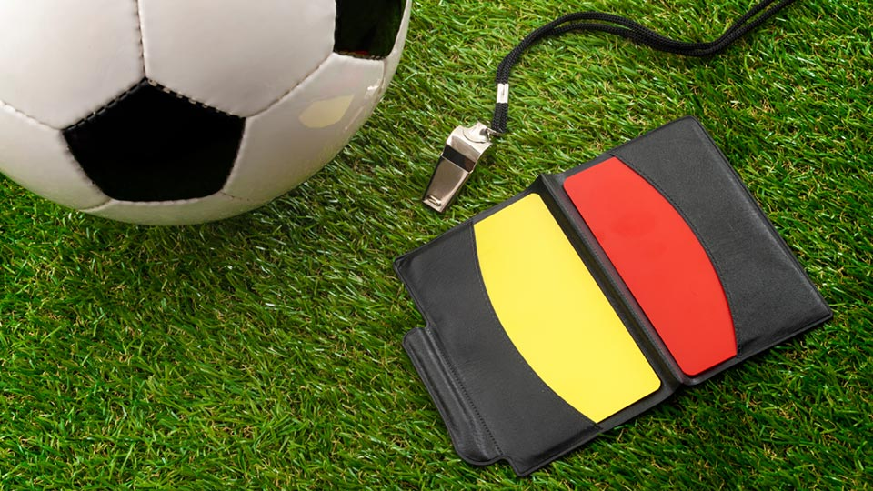

"O campo do jogo Dimensões O campo de jogo será retangular. O comprimento da linha lateral deverá ser superior ao comprimento da linha de meta. Partidas nacionais Comprimento: mínimo 90 m e máximo 120 m Largura: mínima 45 m e máxima 90 m Partidas internacionais Comprimento: mínimo 100 m e máximo 110 m Largura: mínima 64 m e máxima 75 m Marcação do campo de jogo O campo e jogo será marcado com linhas. As ditas linhas pertencem as áreas que demarcam. As duas linhas de marcação mais compridas denominam-se linhas laterais. As duas mais curtas chamam-se linhas de meta. Todas as linhas terão uma largura de 12 cm como máximo. O campo do jogo estará dividido em duas metades por uma linha média. O centro do campo estará marcado com um ponto na metade a linha média, ao redor do qual se traçara um círculo com um raio e 9,15 m. Área de meta A área de meta, situada em ambos extremos do campo de jogo, será demarcada a seguinte maneira: Serão traçadas duas linhas perpendiculares a linha de meta, a 5,5 m da parte interior de cada poste de meta. As ditas linhas se adentrarão 5,5 m no campo de jogo e se unirão com uma linha paralela a linha de meta. A área delimitada por essas linhas mais a linha de meta será a área e meta. Área penal A área penal, situada em ambos extremos do campo de jogo, será demarcada da seguinte maneira: Serão traçadas duas linhas perpendiculares a linha de meta, a 16,5 m, da parte interior de cada poste de meta. Essas linhas se adentrarão 16,5 m no campo de jogo e se unirão com uma linha paralela a linha de meta. A área delimitada por essas linhas e a linha de meta será a área penal. Em cada área penal será marcado um ponto penal a 11 m de distância do ponto médio da linha entre os postes e eqüidistante dos mesmos. No exterior de cada área penal se traçará, também, um semicírculo com um raio de 9,15 m desde cada ponto penal. Bandeiras de canto Em cada canto será colocado um poste não pontiagudo com uma bandeirinha. A altura mínima do poste será de 1,5 m. Também se poderão colocar bandeirinhas em cada extremo da linha média, a uma distância mínima de 1 m do exterior da linha lateral. Área de canto Se traçará um quadrante com um raio de 1 m desde cada bandeirinha de canto ao interior do campo de jogo. As metas As metas serão colocadas no centro de cada linha de meta. Consistirão em dois postes verticais, eqüidistantes das bandeirinhas de canto e unidos na parte superior por uma barra horizontal (travessão). A distância entre os postes será de 7,32 m e a distância da borda inferior do travessão ao solo será de 2,44 m. Os potes e o travessão terão a mesma largura e espessura, com o máximo de 12 cm. As linhas e meta terão as mesmas dimensões que os postes e o travessão. Poderão ser colocadas redes fixadas nas metas e no solo atrás a meta, com a condição de que estejam presas de forma conveniente e não atrapalhem o goleiro. Os postes e o travessão deverão ser e cor branca. Os postes deverão estar fixados firmemente no solo. Poderão ser utilizadas metas móveis somente no caso de que se cumpra essa exigência. → Decisões do International F. A. Board Se o travessão se rompe ou sai do lugar, interrompe-se o jogo té que tenha sido reparado ou colocado em seu lugar. Se o travessão não puder ser reparado, a partida será suspensa. Não se permitirá o emprego de um corda como substituta do travessão; se puder ser reparado, a partida reiniciará com a bola ao chão no lugar onde se encontrava quando se interrompeu o jogo. Os postes e os travessões deverão ser de madeira, metal ou outro material aprovado. Podem ter forma quadrada, retangular, redonda ou elíptica e não deverão constituir nenhum perigo para os jogadores. É proibido todo tipo e publicidade comercial - quer seja real ou virtual - no campo de jogo e nas instalações do mesmo (incluídas as redes e as áreas que as delimitam) desde o momento em que as equipes entram no campo de jogo até o momento em que saiam no meio do tempo e desde o momento em que voltam a entrar no campo até o término da partida. Em particular, proíbi-se o uso de qualquer tipo de publicidade nas metas, redes, postes de canto e nas próprias bandeirinhas. Não se colocarão equipamentos estranhos ao jogo (câmeras, microfones, etc.) nos ditos materiais. Está proíbida a reprodução real ou virtual de logotipos ou emblemas representativo da FIFA, Confederações, Associações Nacionais, Ligas, Clubes ou outros organismos no campo e jogo ou nas instalações o mesmo (incluídas as redes das metas e as áreas que delimitam) durante o tempo de jogo, tal como se estipula a decisão 3. Poderá ser feita uma marcação fora do campo de jogo, a 9,15 m do quadrante de canto e perpendicular à linha de meta, para marcar a distância que deverá ser observada na execução de um tiro de canto. A bola Propriedades e medidas: será esférica será de couro ou outro material adequado terá uma circunferência não superior a 70 cm e não inferior a 68 cm terá um peso não superior a 450 g e não inferior 410 g, no começo da partida terá uma pressão equivalente a 0,6 - 1,1 atmosferas (600 - 1100 g/cm2) ao nível do mar → Substituição de uma bola defeituosa Se a bola estoura ou se danifica durante uma partida: o jogo será interrompido; o jogo se reiniciará por meio de bola ao chão, executada com uma nova bola no lugar onde a primeira bola se danificou. Se a bola estoura ou se danifica em um momento em que não está em jogo (tiro inicial, tiro e meta, tiro de canto, tiro livre, tiro penal ou arremesso lateral): A partida se reiniciará conforme às regras A bola não poderá ser trocada durante a partia sem a autorização o árbitro. Número de jogadores A partida será jogada por duas equipes formadas por um máximo de 11 jogadores cada uma, dos quais um jogará como goleiro. A partida não se iniciará se uma as equipes tiver menos e sete jogadores. → Competições oficiais Poderão ser utilizados como máximo três (03) substitutos em qualquer partida de uma competição oficial jogada sob os auspícios da FIFA, as Confederações ou das Associações Nacionais. O regulamento da competição deverá estipular quantos substitutos poderão ser designados, desde três (3) até um máximo de sete. → Outras partidas Em outras partidas poderão se utilizar como máximo cinco (5) substitutos, sempre que: as equipes em questão cheguem a um acordo sobre o número máximo; o árbitro tenha sido informado antes do início da partida. Caso o árbitro não tenha sido informado, ou não se tenha chegado a um acordo antes o início da partida, não se admitirão mais de três (3) substitutos. Todas as partidas → Em todas as partidas, os nomes dos substitutos deverão ser entregues ao árbitro antes do início da partida. Os substitutos que não tenham sido designados esta maneira, não poderão participar da partida. Procedimentos de substituição - Para substituir-se a um jogador por um substituto deverão ser observadas as seguintes condições: - o árbitro deverá ser informado da substituição proposta antes que esta seja efetuada - o substituto não poderá entrar em campo e jogo até que o jogador o qual substituirá tenha abandonado o campo de jogo e recebido o sinal do árbitro - o substituto entrará em campo e jogo unicamente pela linha central e durante uma interrupção o jogo - uma substituição ficará consumada quando o substituto entra em campo de jogo - a partir desse momento o substituto se converte em jogador, e o jogador ao qual substitui deixa de ser jogador - um jogador que tenha sido substituído não poderá participar mais da partida - todos os substitutos estão submetidos à autoridade e jurisdição do árbitro, sejam chamados ou não a participar do jogo Troca de goleiro - Qualquer dos jogadores poderá trocar e posição com o goleiro, sempre que: - O árbitro tenha sido previamente informado - A troca se efetue durante uma interrupção do jogo Contravenções/Sanções - Se um substituto entra em campo de jogo sem a autorização do árbitro: - o jogo será interrompido - o substituto receberá como sanção o cartão amarelo e a ordem para que saia do campo de jogo - o jogo se reiniciará mediante bola ao chão no mesmo lugar que se encontrava quando o jogo foi interrompido - Se um jogador trocar de posição com o goleiro sem a autorização do árbitro: - jogo continuará - os jogadores em questão serão sancionados com o cartão amarelo, imediatamente depois da próxima interrupção do jogo - Para qualquer outra infração a regra: - Os jogadores serão sancionados com o cartão amarelo Reinício do jogo - Se o árbitro interrompe o jogo para aplicar uma advertência: - A partida será reiniciada por meio e um tiro livre indireto executado por um jogador a equipe contrária e do lugar onde a bola se encontrava no momento em que o jogo foi interrompido Jogadores e substitutos expulsos - Um jogador expulso antes do início do tiro inicial somente poderá ser substituído por um dos substitutos designados. - Um substituto designado expulso antes do tiro inicial ou depois o começo da partia, não poderá ser substituído. Decisões do International F. A. Board Sujeito às disposições básicas da Regra 3, o número mínimo e jogadores em uma equipe deixa-se a critério das Associações Nacionais. Não obstante, o Board estima que uma partida não deverá continuar se tiver menos e sete jogadores em uma das equipes. O treinador poderá dar instruções táticas aos jogadores durante a partida. Ele e os demais componentes da comissão técnica deverão permanecer dentro dos limites da área técnica nos lugares onde exista um zona tal, e deverão comportar-se de maneira correta. O EQUIPAMENTO DOS JOGADORES Segurança - Os jogadores não utilizarão nenhum equipamento nem levarão nenhum objeto que seja perigoso para eles mesmos ou para os demais jogadores (incluindo qualquer tipo de jóias). Equipamento básico - O equipamento básico e um jogador será: - um jérsei ou camiseta - calções - caso usem calções térmicos, estes deverão Ter a cor principal dos calções do uniforme - meias - caneleiras - calçado Caneleira - deverão estar abertas e cobertas completamente pelas meias - deverão ser de um material apropriado (borracha, plástico ou material similar) - deverão proporcionar um grau razoável e proteção Goleiros - cada goleiro vestirá cores que o diferenciem dos demais jogadores, do árbitro e dos árbitros assistentes. Infrações/Sanções - No caso e qualquer infração a presente Regra: - não será necessário interromper o jogo - o árbitro ordenará ao jogador infrator que abandone o campo de jogo para que ponha em ordem seu equipamento - o jogador sairá do campo de jogo na seguinte ocasião em que a bola não esteja em jogo, a menos que o jogador então tenha posto em ordem seu equipamento - todo jogador que tenha que abandonar o campo de jogo para pôr em ordem seu equipamento não poderá retornar ao campo de jogo sem a autorização do árbitro - o árbitro se certificará e que o equipamento do jogador está em ordem antes de permitir que reingresse no campo de jogo - o jogador só poderá regressar ao campo e jogo quando a bola não estiver em jogo Um jogador que tenha sido obrigado a abandonar o campo de jogo por infração a esta Regra e que entra (reingressa) ao campo de jogo sem a autorização do árbitro será advertido e receberá o cartão amarelo. Reinício de jogo - Se o árbitro interromper o jogo para advertir o infrator: - o jogo será reiniciado por meio de um tiro livre indireto executado por um jogador da equipes adversária do lugar onde a bola se encontrava quando o árbitro interrompeu a partida. O ÁRBRITO A autoridade do árbitro - Cada partida será controlada por uma árbitro, que terá a autoridade total para fazer cumprir as Regras de jogo na partida para a qual tenha sido designado. Poderes e deveres - fará cumprir as regras de jogo - controlará a partida em cooperação com os árbitros assistentes e, sempre que o caso o requeira, com o quarto árbitro - se assegurará e que as bolas utilizadas correspondam às exigências da Regra 2 - se assegurará de que o equipamento dos jogadores cumpram às exigências da Regra 4 - atuará como cronometrista e tomará nota dos incidentes na partida - interromperá, suspenderá ou finalizará a partida quando julgue oportuno, no caso de que se cometam infrações as regras de jogo - interromperá, suspenderá ou finalizará a partida por qualquer tipo e interferência externa - interromperá a partia se julgar que algum jogador tenha sofrido uma lesão grave e se encarregará de que o mesmo seja transportado para fora do campo de jogo - permitirá que o jogo continue até que a bola esteja fora de jogo, se julga que um jogador está só levemente contundido - se assegurará de que todo jogador que sofra uma lesão com sangramento saia do campo de jogo. O jogador só poderá regressar depois do sinal do árbitro, que se certificará de que a ferida tenha deixado de sangrar - permitirá que o jogo continue se a equipe a qual se tenha cometido uma infração se beneficia e uma vantagem, se sancionará a infração cometida inicialmente se a vantagem prevista não se concretiza nesse momento - castigará a falta mais grave quando um jogador comete mais e uma infração ao mesmo tempo - tomará medidas disciplinares contra jogadores que cometam faltas merecedoras de advertência ou expulsão. Não está obrigado a tomar as medidas imediatamente, porém deverá fazê-lo apenas logo que se detenha o jogo. - Tomará medidas contra os funcionários oficiais das equipes que não se comportem de forma correta e poderá, se o julga necessário, expulsá-los do campo de jogo e de seus arredores - atuará conforme as indicações de seus árbitros assistentes em relação com incidentes que não tenha podido observar - não permitirá que pessoas não autorizadas entrem no terreno de jogo - reiniciará o jogo após uma interrupção - remeterá às autoridades competentes um informe da partida, com dados sobre toas as medidas disciplinares tomadas contra jogadores ou funcionários oficiais das equipes e sobre qualquer outro incidente que tenha ocorrido antes, durante e depois da partida Decisões do árbitro - As decisões do árbitro sobre fatos em relação com o jogo, são definitivas. - O árbitro poderá mudar sua decisão unicamente, se si der conta e que é incorreta ou, se o julga necessário, conforme a uma indicação por parte de um árbitro assistente, sempre que não tenha reiniciado ainda o jogo. Decisões do International F. A. Board Um árbitro (ou no caso que proceda, um árbitro assistente ou um quarto árbitro) não será responsável de: - Qualquer tipo e lesão que sofra um jogador, funcionário oficial ou espectador. - Qualquer dano a todo tipo de propriedade. - Qualquer outra perda sofrida por um indivíduo, clube, companhia, associação ou entidade similar, a qual se deva ou possa dever-se a alguma decisão que tenha podido tomar conforme as regras de jogo ou com respeito ao procedimento normal requerido para celebrar, julgar e controlar uma partida. - Entre tais situações podem compreender-se: - uma decisão quanto as condições o campo de jogo, do recinto ou metereológicas sejam tais que não permitam disputar o encontro - uma decisão de suspender definitivamente uma partida por qualquer razão - uma decisão no que diz respeito ao estado dos acessórios e equipamentos utilizados durante uma partida, incluindo as traves de meta, o travessão, as bandeirinhas de córner e a bola - uma decisão de suspender ou não suspender uma partida devido a interferências dos espectadores ou por qualquer problema na área dos espectadores - uma decisão e interromper ou não o jogo para permitir que um jogador lesionado seja transportado para fora do campo e jogo para ser atendido - uma decisão de solicitar ou insistir que um jogador lesionado seja retirado do campo de jogo para ser atendido - uma decisão de permitir ou não a um jogador levar certa indumentária ou equipamento - uma decisão (na medida em que isso possa ser de sua responsabilidade) de permitir ou não a toda pessoa (incluindo funcionários as equipes e do estádio, pessoal e segurança, fotógrafos ou outros representantes dos meios e informação) estar presente nos arredores do campo de jogo - qualquer outra decisão que possa tomar conforme as regras de jogo ou em conformidade com seus deveres e de acordo com o estipulado pelas normas a FIFA, Confederação, Associação ou Liga sob cuja jurisdição se dispute a partida Em torneios ou competições em que tenha sido designado um quarto árbitro, as tarefas e os deveres deste deverão ser conforme as diretivas aprovadas pela International F. A. Board. Os fatos relacionados com o jogo compreenderão se um gol tenha sido ou não consignado e o resultado a partida. OS ÁRBITROS ASSISTENTES Deveres - Serão designados dois (02) árbitros assistentes que terão, sem prejuízo do que decida o árbitro, a missão de indicar: - Se a bola tenha ultrapassado em sua totalidade os limites de campo - A que equipe corresponde efetuar os tiros e canto, de meta ou o arremesso lateral - Quando se deverá sancionar a um jogador por ele estar em posição e impedimento - Quando se solicita uma substituição quando ocorre alguma falta ou outro incidente fora do campo visual do árbitro Assitência - Os árbitros assistentes ajudarão igualmente o árbitro a dirigir o jogo conforme as Regras. - Em caso de intervenção indevida ou conduta incorreta e um árbitro assistente, o árbitro prescindirá de seus serviços e elaborará um informe para as autoridades pertinentes. A DURAÇÃO DA PARTIDA Tempo de jogo - A partida durará dois tempos iguais de 45 minutos cada um, salvo que por mútuo acordo entre o árbitro e as duas equipes participantes decidam outra coisa. Todo acordo e alterar o tempo e jogo (por exemplo, reduzir cada tempo a 40 minutos devido a insuficiência de luz) deverá ser tomado antes do início da partia e em conformidade com o regulamento da competição. 